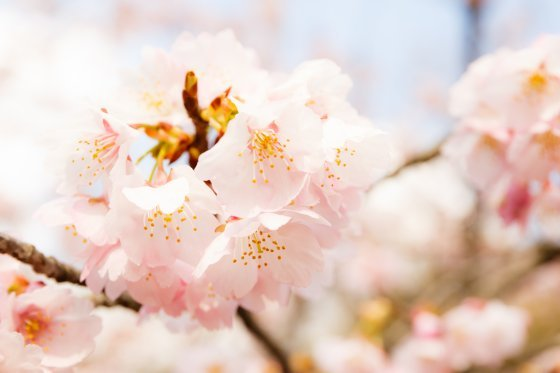
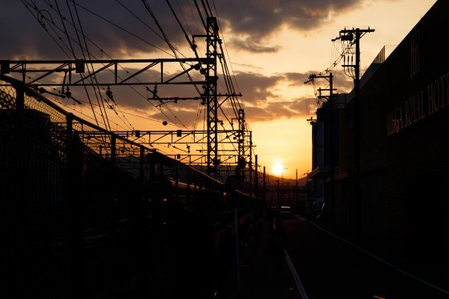
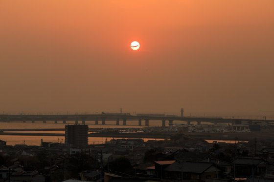

| Chocolate vol.1 | |
| 鈴木詩織 | |
| (2017) | |
Chocolate
「自分の雑誌を作ってみたい」と思っていました
電子書籍で自分の作品を販売できる世の中になりました。誰でも簡単に自分の作ったものを人に読んでもらって、お金を得ることができます。これから先、もっともっと、たくさんの人が好きなものを作って、作ることを楽しめる世の中ができていく。......そんな気がします。
私自身もまだ成熟していないこの市場に飛び込んで、自分の作品を出版している人間です。恐る恐る「作家・鈴木詩織」と名乗ったりして。
それでも名乗っているとだんだん周りの扱いも変わってきます。「鈴木詩織さんは作家だ」という目で見てくれる。紙の本を出していないし、誰か権力のある人に認められたわけではありませんが、この「誰でも作れる世の中」では「作家」という定義も変化しているように思えます。
実は鈴木詩織として活動するよりも前から色々な名前で電子書籍の出版してきました。うまく行っていなかったわけではなかったけれど、ミスコンとかモデルとかやっていたら、名前をいくつも持つのはとても大変で。だから「鈴木詩織」一つに統一しました。「鈴木詩織」が知られる前から活動自体はしていたということです。
なんだかんだ言って、電子書籍を作るのが楽しくて。執筆から編集・校正まで全部自分でやっていますが、この流れがすごく楽しい！ 一冊本を作り上げると達成感があります。それも気持ちがいい。だから何度もやりたくなる。続けたくなる。
そして自分の本を作って世に出すたびに、「もっともっと可能性があるんじゃないか」って思えてきて。自分の「文章を書くのが好き！」という思いや、「作りたい！」というエネルギーがもっともっといろんな場所で生きてくるんじゃないかって。
それはもちろん私自身の経済的利益のこともありますし、活動の場所の広がりのことを指すこともあります。それ以外にも「私のことを応援してくれる人たちをもっと楽しませる方法があるんじゃないか。『鈴木詩織』を楽しんでもらう方法がもっとあるんじゃないか」なんてことも考えます。
そうやっていろいろ考えていたら、「自分の書きたいもの、作りたいものをもっと自由に作りたい。小説とか大きなものだけでなく、もっと自由に本を作りたい」と思うようになりました。
今毎日更新しているブログ。あれの延長線上にあるようなもの。でも、あれは「毎日更新」を目指しているから、更新頻度を重視するあまりどうしてもクオリティが落ちてしまうところがある。あと、ブログでの文章の見せ方と、書籍での文章の見せ方は違う。
だから、「書籍としての書き方」にこだわった随筆をまとめた「雑誌」を作ってみよう！
調べてみたら似たようなことをしている人はネット上にたくさんいて。見よう見まねで始めてみることにしました。
まだまだ、文章も、人としても未熟なところはたくさんあるけれどやってみよう！
というノリで今月からこの 『 Chocolat e 』を作っていこうと思います。
不安もいっぱいですが 、 PDC A サイクルを繰り返して改善しながら続けていくつもりです。
たくさんの人に、今よりもっと「鈴木詩織」が作ったものを楽しんでもらえればと思います。
春生まれのくせに
春が苦手です。どうしても気分が安定しない。憂鬱になることが多い。おまけに今年は花粉症がひどくて、目も鼻も喉もかゆい。
昔から春になると、物悲しくなったり、泣いていたり。すっかり苦手意識が染み付いているのか、日々落ち込むのを警戒しながら生活しています。
でも、決して嫌いなわけではないんです。むしろ好きかな。
変な人だと思われるかもしれないけれど、エネルギーが噴き出す春の感じがすごく好きです。外に出ているだけで、何かポジティブなものが流れているのを感じられるような。
......元からこういうのを感じやすい人間です。吹いている風に乗っているものとか、空の色とかで季節や何かの気配を感じる。幽霊とかが見えるわけでありませんが、何かを感じ取ることができる。だから「春」という季節は、その季節独特のエネルギーを感じてしまう。
私自身いろいろなことを感じすぎて疲れて嫌になることもあります。でも感じられことが喜びに変わることもあります。
春のエネルギーはポジティブなものが多い。田んぼのあぜ道にオオイヌノフグリとかホトケノザとか見つけてから桜が咲くまで。いろんなものがあちこちから噴き出してくる。それを感じて、元気になれる。
感じたものが体の中に溜まってぐるぐる混ざり合って。
「自分にも何かできるんじゃないか」
「もっと何かを生み出せるんじゃないか」
って、期待もできちゃう季節。
春は苦手です。憂鬱になるし、体調も悪くなるし。
でも、新しいことを始めるなら春。
春に始めたことは上手くいく。
吹き出るエネルギーを吸収して勢いに乗られる。
一人で勝手にそう信じています。
自分の髪型に対するジレンマ
もう長いことこの髪型です。私のブログや事務所のホームページなどで私の外見をご存知の方もいるかと思いますが、黒髪ロングのストレート。
今までにボブや、パーマをかけたこともあります。染めたのは二十才ごろに、薬局の染料で試した一回。あまり染まりませんでした。ヘアアイロンなどでアレンジしようにも、髪質なのかすぐに元に戻ってしまいます。
以前ミスグランドジャパンに出場した時には「ロングヘアのストレートの人は髪を上げたほうがいい」と言われました。それでも私は下ろすことにこだわりたくて。そう伝えたら、「髪を下ろして世界大会で勝負したいなら、耳を隠せ」と言われました。ですからトレーニングキャンプも、事前審査も本番も、その髪型で挑みました。ミスコンの上での一番の上策は「髪を上げること」なのに、私はどうしても下ろすことにこだわってしまいました。
この下ろした髪型で人前に出るのが、自分に一番しっくりきます。こういうキャラクターなのかな。
でも正直、プライベートでは髪が頬にかかるのが苦手です。髪が耳を隠し、頬の周りを覆うと、どうしても気分が沈んでしまいます。
だから普段の生活ではなるべく耳を出すようにしています。元から気分の浮き沈みが激しく、落ち込みやすい性格だから、「できるだけ明るくするぞ！」というつもりで。ミスグランドの時には「上げた方がいい」と言われても上げなかったのに、ポニーテールにしていることも。
モデルとして、人前に出る時には「鈴木詩織」というキャラクターを演じたいから髪を下ろしたい。でも普段の生活の中では気分を明るくしたいからできるだけ耳を出したい。
「髪を切る」という選択肢はなく。人前に出る時には下ろして、プライベートでは頰にかからないようにする。
この髪型の外見の自分がしっくりくるはずなのに、いろいろと考えてしまいます。
去年の今頃
去年の三月二十一日に、勤めていた会社を退職しました。四月からはモデルとして、作家として、夢を叶えることに専念するために。親からは反対されたし、周りも半信半疑だったろうけど、私は自分が「やりたい」と思ったことを「やる」ことに決めました。
いろいろなことがあって、正直会社のことは大っ嫌いでした。入社二年で辞めた私。「石の上にも三年」と言われていたから「せめて三年は頑張ろう」と思っていたのに、二年しか持ちませんでした。
「自分はダメな人間。こんなこともできない人間」
そんなことを刷り込まれた二年間でした。
会社としても、私のような人間には辞めてほしかったことでしょう。私が辞めることでホッとしたと思います。
大っ嫌いな会社を辞めると決断しても、「嫌い」という感情は大きくなるばかりで。「立つ鳥跡を濁さず」という余裕もないくらい、気持ち的にはいっぱいいっぱいになっていました。
それでも最終勤務日。
その日一日、私は一人で仕事をしていました。出社から退勤まで、ずっと一人でした。多くの人にとっては不思議なことのように感じられるかもしれませんが、私の勤めていた会社では「一人で一日オフィスにいる」というのは珍しくありません。
一日、やることをこなす。淡々と。ほぼ、いつも通りの一日だったと思います。最終日らしい感慨に耽ることもなく、いつも通りでした。時計をちらちら見て「早く終わらないかな」なんてため息をつくのも。その日が最後だというのに。
このまま何も感じないまま、ここを出て行くのかな......そう思うと少し寂しいような気もしましたが、でも何も感じないならそれでもいいか......と諦めのようなものもありました。
それでもやっぱり、最後の最後。誰もいない部屋を掃除し、最後の片付けをして、建物から出て、鍵をかけて、所定の場所に鍵を隠したら（そうしておくことにあらかじめ決まっていた）、何だか急に感じるものが出てきたのか。
振り返って一礼。
「ありがとうございました」
と言っている自分がいました。誰に聞かせるともなく。
当時は一人暮らしだったので、夕食も一人です。近所のファミレスで、ハンバーグとパンケーキを食べました。一人ぼっちなので、本当に「ささやかな」退職祝いパーティー。自分に「お疲れ様」と言って、「これからもよろしく」と約束して。
次の日から始まる、「夢を追いかける生活」に胸をときめかせつつ......正直不安ばかりでした。親にも周りにも強気な発言をしてきた割に、この一人パーティーでは「本当に上手くいくのか......」なんてことばかり考えて、苦しんでいました。
その日はお風呂もちょっと贅沢に。薬局で買ってきた入浴剤でリッチな気分を楽しみました。
そして早めに寝ました。
三月二十二日の朝は、日の出前に起き出して、近所の大きな公園に歩いて行きました。すっきりと晴れた、少し寒い朝でした。
そこで日の出を見ました。「新しい生活の初日の出」ということ。自分の気持ちをしっかりと保つための儀式みたいなもの。
「これから先、必ず成功する。成功してやる！ モデルとしても、作家としても、成功してやる！」
そう誓ってきました。
あの誓いを立てた日から、一年。あの日を境に私は職業を変えました。人前に出る時の肩書も変えました。
たとえ辛いことがあっても、あの日に立てた「絶対成功する！」という志も変わっていません。自分のやりたいこと・やるべきことに突き進んだ一年でした。
「会社を辞めてよかった」というよりも、自分の人生にとって正解なことをしてきたといった感じです。納得ができる。
だから今、すごく幸せです。
結婚に対する焦り
二〇一七年四月に私は二十七歳になります。今私はアラサー世代真っ只中です。仕事に恋に結婚に......年相応の悩みを抱えています。
身の回りでは結婚した人や、「そろそろ結婚を考えている」という友人もちらほら。中には子供を産んだという人まで。
私自身付き合っている彼と結婚できるのか、私に果たして結婚生活が送れるのかといった不安を抱えています。
他人の結婚話が進んでいくのを見て、焦らないといえば嘘になります。正直めちゃくちゃ焦ります。
ただ、アラサーの女性として「結婚」や「妊娠」といったキーワードに敏感になってしまうこと、そして不安になってしまうことはとても正常な反応なのではないでしょうか。だいたいこの年代の読む雑誌がそう言ったテーマを扱っているのだから、悩んで当然のことなのかもしれません。
結婚の形式も多様化している中「周りの目を気にする必要はない。周りの人の意見に流されて結婚するのはまちがっている」などともたくさん言われています。結婚に対して不安になることを疑問視する声もあります。
それでも一人の人と一生の愛を誓うことを夢見るのは、女性として、人としてごく普通のことなのだと、私は思うしここで言います。多分よそでも機会があったらそういう主張をするでしょう。
夢を見て何が悪い。結婚に対して不安になったり焦ったりして何が悪い。それは普通の人間である証拠だ、と。
むしろ「結婚」に対する夢を見ることを否定するのは、ちょっとネガティブすぎる気もします。
それで悩みすぎて心や体を壊してしまうのは問題ですが、適度に悩む程度だったらむしろ悩むくらいが丁度いい。
私自身は、しばらく結婚のことについて悩むことになりそうです。でも「悩むのが当たり前」と構えて、ネガティブになりすぎず、前向きに悩むようにします。
新しいことを意識して始める
私の子供の頃は部活の大会、定期テストなどみんなにほぼ平等に与えられた機会がありました。好奇心も旺盛な方だったから、そういう「挑戦する場」は他にも多かったかもしれません。でも子供の頃というのは誰にでも何かしら設定された「挑戦する場」があったのではないでしょうか。
テストなどは期日があって、それまでに準備をして、コンデションを整える必要があります。テストそのものに目標を立てて、それを実現するまでに計画を立てて実行していく。子供の頃はそれを繰り返す機会がたくさんあって。
そして一つ「挑戦する場」を乗り越えたら、自分の準備や結果に対して色々反省する。それを乗り越えてまた次の「挑戦する場」を目指していく。挑戦した経験とは自分にとって「節目」みたいになり、あればより強くしっかりと立っていられるようになります。
学校という枠組みにいたら、多少なりともこの流れを見たことがあるのではないかと思います。
私は大学を卒業した後、会社に入り「社会人」になりました。その頃「いよいよ『大人』としての生活が始まる」と思っていました。
いざ始まってみると、毎日同じことの繰り返しで。「小さな成功体験」はできるけど、何か目標を達成したみたいな充実感のあるものは一年のうちに限られていて。それも決まっているから、勤続年数が長くなれば慣れていっちゃうのかなんて思いました。
大人になると意識して物事に挑戦していかないと、どんどん「挑戦する場」はなくなっていってしまう。
そういうものがなくても生きてはいけます。普通の生活はできてしまいます。でもそういう節目のない生活を続けていると「自分の人生ってなんのためにあるんだろう」って思えてきちゃう。実際私は入社してすぐにそう思い始めました。
そう思わず、自分の人生を充実させるためにも、大人になっても意識して「挑戦する場」自分に設定していかないといけないのだなと思います。
目標があれば、そこに向かって目的を持って行動することができる。それを繰り替えいしていくと、自分の人生にしっかりとした節目ができる。そしてより丈夫で充実した人生を送ることができる。
学校からでて、「大人」として幸せになるためにも、意識して繰り返し挑戦していく必要があるのではないでしょうか。

私のカフェでの過ごし方
ゆっくりとカフェで過ごすのが好きです。仕事の書き物をすることもあれば、たっぷりと読書をすることもあったり。
やろうと思えば家でもできることではありますが、敢えて外でやるようにしています。一日中家の中にいると気分も塞ぐし、体も動かさないし。本来ならば家の中でもできることを敢えて外でやることで、気分転換もできます。
カフェまで歩きながら、これからの仕事のこととか、夢とか、目標のこととか考えたりして。そういう時間がすごく好きです。
そしてカフェに着いたらコーヒーを頼んで。私はコーヒーを飲むと集中力のスイッチが入るみたいです。頭のモードがそれまでとは切り替わる。
「さあ、やるぞ！」
って気分になる。
一杯のコーヒーを飲み終わったら作業開始。だいたい一〜二時間ほど集中力が持ちます。
図書館などの静かな場所が苦手で。あの「静かにしていなければならない」という空気はどうも落ち着かない。適度にざわつきがあった方が集中できる。あと、仕事の上でパソコンやスマホを使うから、やっぱりカフェの方がいいのかな。
長くいてもお店の迷惑にならないようなカフェを近所で探して利用しています。
カフェ選びの上ではトイレの場所も重要。お店の中にトイレがあるカフェだと安心して作業に利用できます。
仕事や読書をするときにはコーヒーしか頼まないことが多いのですが、時々ケーキなんかをつけてちょっと贅沢したり。
「最近仕事頑張ってるから、これくらいいいよね」
なんて。結構頻繁にやっていますが。
気分を変えて、頭の中をすっきりとさせた状態で仕事ができるので、近所のカフェは重宝しています。
なんだかんだで支えてくれた両親
今、「モデル・作家」を名乗らせてもらっていますが、これができたのは私自身の努力もあったと思います。この一年相当頑張ってきたな......と振り返ってしみじみ思うことは多々あります。
でも、もちろん私一人ではここまでやれなかった。ひとりぼっちだったら、一年も経たないうちにやめていたことでしょう。私は努力してきたけれど、たくさんの人にも支えられてきました。
日頃「応援してるよ」と声をかけてくださる方、小説をダウンロードしてくださる方、この雑誌を手に取ってくださった方。皆様がいたから頑張れたところもたくさんあります。
けれども一番大きかったのは両親のおかげだと思っています。
私の両親は小さい頃から色々な経験をさせてくれました。そして支えてくれました。私が「やりたい」と言ったことはだいたいやらせてくれました。
もちろん激しくぶつかりあったこともあるし、今でも正直「嫌だ」と思う点は沢山あります。大っ嫌いになって顔も見たくない、家に帰りたくないという時期もありました。
正直なところ、お互いのことを許しあえて、分かりあえるようになったのは割と最近のことかもしれません。
「会社を辞めてモデルをやる」と言ったとき、最初は反対もされたし「無理だ」とも言われました。でも最終的には許してくれました。
それでもあれだけ反対しながらも、ミスグランドジャパンの日本大会には東京まで応援に来てくれました。ステージの上から両親の姿を見つけました。ライトでメガネをギラギラさせながら、笑顔で私に向かって手を振ってくれました。その姿を見て、ステージ上にいながらもちょっとじんわりしました。
そのあとに送られてきたメッセージ。
「自分の子とは思えない。子供の頃からあんたはいろんなことを成し遂げて、いつもびっくりさせられてきた」
大会の後、そのメッセージを見て「ここからが勝負！」と思いました。
ここから頑張れば、必ず大きな成果を出せると信じていたし、私にはそれができると思っていました。それは私自身にとって幸せなことです。そしてそうなることこそが両親に対する親孝行なのだとも思います。
今、未熟ながら「モデル・作家」を名乗らせていただいています。不安や嫌なことがないわけではありませんが、充実しています。
この幸せを維持し、もっと大きくすること。その姿を親に見せること。私の考える「親孝行」であり、目標の一つです。

「成長しようとすると人間関係が変わる」という説
「肩書きが変わると人間関係が変わる」とか「人が成長しようとすると周りにいる人たちが変わる」とかいう説を何度か聞いたことがあります。正直この言葉が今まですごく怖いと感じていました。
モデルとして、ミスコンファイナリストとして、この一年人前に出てきました。職業が変わり、多くの人からの見られ方が変わりました。「モデルをやってる」「ミスコンに出ている」というだけで、人から興味を持たれてちやほやされることが増えました。
そうしていくうちに本当の自分が見えなくなっていくようで。
そして今まで付き合ってきた人たちのことも分からなくなって。
そんな時に冒頭の説を思い出して。ものすごく怖かった。今までそばにいてくれた人たちがいなくなっちゃうんじゃないかって。
全部考えすぎ......分かっていても考えちゃうのが私です。
でも、友達も彼氏も、私がどんなに怖がっていてもそばにいてくれました。
「それが鈴木詩織だろ」
「なんか周りから見たらよく分からないくらい我武者羅になっちゃうところ」
「ああだこうだと悩みながらも、なんだか一人で勝手に悟りを開いてるところ」
そう言われて最後に、
「そういうところ昔から変わらないよね」
で締めくくられて。
友達や彼氏の「鈴木詩織はなんだかんだ変わらない」という言葉にどれほどホッとしたことか。
決して変わりたくないわけではありません。今よりももっと豊かに暮らしたいし、作家・モデルとして活躍できるようにはなりたい。もうちょっと自分に自信を持てるようにもなりたいし、自分のことを好きにもなりたい。
変わりたくないわけではありません。
それでも、今まで私の周りで私を大事にしてくれた人のことは大切にしたい。裏切りたくない。傷つけたくない。それ以上に、今まで周りにいてくれた人たちのことが好きだから、いなくなったら私が寂しい。どんなに肩書きが変わっても、ずっと付き合っていきたい。
「肩書きが変わったら身の周りの大切な人たちがいなくなる」というのは私の勝手な妄想で。私の大切な人たちは昔から、「鈴木詩織のそういうところって変わらないな」って、分かってるんですね。
新作執筆中の葛藤
人前に自分の文章を出していますが、その過程で様々な葛藤はしています。こうしたことをしていると、ありがたいことに人からは「すごいね」「かっこいい」などと言ってもらえます。けれども決していつも自信満々なわけではありません。
「これを人前に出しても大丈夫だろうか......」
「面白いって思ってもらえるかな」
「私って客観的に見たら本当はすごく下手で、こんなことをしていちゃいけないのかな」
という不安もあります。常に不安がっているわけではありませんが、人からの見られ方を気にしてしまう時もあります。
人前に出て活動しているからには全く自信がないというわけではないのでしょうし、もちろん楽しいからここまで続けています。文章を書くこと自体も好きですし、自分の文章も好きです。でもやっぱり思い悩む。
書く上での自信は完璧なものではなく、時々すごく揺らいで落ち込んでしまうような、とても不安定なものです。
特にこうして毎日ブログを書いていたり、不定期に小説を出版していると、「前よりも上を」という気持ちもわきます。それを向上心と呼べば聞こえはいいのですが、時に押しつぶされそうにもなります。
このような、完璧ではなく時に激しく揺らぐ私の不安定な自信。
こうして物を作るのは楽しいし、好きだけど、常に自信満々でいることは私にとって少々難しいこと。それでも克服しなければいけない点かもしれません。
私のバイブル、魯迅『吶喊』
中学三年生の頃、国語の教科書で魯迅の『故郷』を読みました。主人公の魯迅が故郷に帰り、昔一緒に遊んだ友人の変わり果てた姿を見て嘆くという話。
当時の国語の先生が「この話はどの教科書にも載っていて、あなたがたのご両親も読んだことがあるはず」と言っていたので、広く知られた作品なのだと私は勝手に認識しています。
その際に『吶喊』という文章を知りました。
今、私は「モデル・作家」として人前に立たせていただいております。まだまだ未熟なところも多く、不安もたくさんあり、名乗るのが恥ずかしくなることもあります。けれども「モデル・作家」になることは私が長年望んできたことの一つです。
そしてまだまだやりたいことも、夢もあります。これから書きたいこともたくさんあるし、モデルとしてショーにもっと出たいという気持ちもあります。私は「モデル・作家」を名乗れるようになったことで「夢が叶ってよかったねチャンチャン」ではないのです。
こうして奮闘している今、この記事を書くために魯迅の『吶喊』を読みました。今までに何度も読んできた文章です。新しいことを始める時、初心に帰りたいと思った時には必ずと言っていいほど読んでいます。
『吶喊』を読んでいると、本当に魯迅の雄叫びが聞こえるようで。私はそれに呼応し、一緒に雄叫びをあげながら走り回る。
魯迅に共鳴した私に、さらに共鳴した人が現れて。一緒に走っていく。魯迅を先頭にして次々と人が続いていく。
そうして世の中ってよくなっていくのだと思います。一人の人間が必死に頑張って、それに対する共鳴が広がっていくことで。
だから私はこれから先も呼びかけ続けたいと思います。毎日のブログで、著作物で、モデルの活動で、この世の中を駆け回ります。そして多くの人を慰め、励まします。
それが私の使命なんじゃないかな......と思います。モデルとして、作家として生きる。そうすることで人を助け、自分も幸せになる。これこそが私の使命なのだと。
まだまだ小さな叫び声で、説得力もなく、頼り甲斐もなく、めちゃくちゃなところはあるかもしれない。それでも私は続けます。そうすることが自分も周りも幸せにできる方法だと信じているから。
私自身、今まで辛い経験もしてきました。もちろん恵まれてきた方だし、いいこともいっぱいありました。それでも悲しいことはあったし、今でもふとした瞬間に生きているのが辛くなって涙をこぼすこともあります。
人間らしい悲しみと、日々戦っています。
だからこそ、この悲しみに負けず、私は世の中に呼びかけたい。
そして私にこう思わせたのは、この『吶喊』だったような気がします。
「自分がやりたいことをやり通し、呼びかけることで、人を励ましたい。自身の悲しみと、同じ悲しみを持つ人を慰めたい」
「何も知らない若造が大それたことを」と思われるかもしれません。
それでも私にはそれができると信じています。
私はこれからも何度も『吶喊』を読むでしょう。そしてその度に自分の使命を思い出すでしょう。そしてまた走り出して、人々を励まし呼びかけるのでしょう。

友達との遊び方
友達と「駅前で会って食事してしゃべってさよなら」という遊びには飽きました。愛知県に住む私は、だいたい待ち合わせは名古屋駅の金時計。そしてその周辺のレストランやカフェで食事。大学通うのに名古屋駅を使っていたこともあって、女子大生時代にその辺は行き尽くした！
というわけで最近は友達と遊ぶ時は少し遠くに行くことを提案しています。日帰りで行けるような、ちょっとした旅行です。
愛知県内や周辺の史跡や、歴史のあるグルメを楽しんだり、今まで行ったことがなかったような場所に敢えて行ってみたり。各市町村のホームページの観光案内を参考に歩き回っています。
ちょっとした観光をしながら話すことは、レストランで話す内容とそんなに変わらず。アラサー女子らしく「恋および結婚」や「仕事」がテーマなことが多い。
それでも歩きながら話していると前向きな気持ちになれます。
「嫌なこともあるけど、結局人生うまくいってるね、私たち」
みたいな空気になります。
毎回の予算は五〜七千円ほどでしょうか。チェーンの居酒屋に飲みに行くよりもちょっと高いかもしれません。でもお互い忙しくてなかなか会えないというような友達なら、一回会うのにこれくらい使ってもいいかなって感覚です。
駅周辺のレストランでおしゃべりに飽きた私は、社会人になって忙しくなった友達とのプチ旅を楽しんでいます。
くよくよ考えながらも、動ける自分が好き
ミスコン、モデル、電子書籍の出版......そして今回のこの「雑誌」。子供の頃はピアノ、学校の宿題のポスター、受験などなど。今までにいろいろなことに挑戦してきました。
成功体験自体は、たくさんしてきたかと思います。「詩織ちゃんはすごい」などの褒め言葉を昔からよく言われてきました。これはとてもありがたいことだったと思います。だからこそ今の私がいる。
でも、私は根っこがものすごくネガティブ人間なので、常に不安を抱えています。今までの挑戦も、「絶対上手くいく！」と信じきってできたことはありません。いつも「不安だー不安だー」と言いながらやってきました。
ずっと側にいた親からは、こうして悩んでいることを「鬱陶しいわ！」と怒られてきました。
「やると決めたんだからやってこい！」
最初の一歩を踏み出すことは、私にとって案外簡単で。そこから歩み続けるのが怖くて怖くて仕方がない。そんな私のことを知っているから、親は一歩踏み出して中途半端に悩んでいる私の尻を叩きまくる。......おかげさまでここまで来ることができました。
「電子書籍の雑誌なんかを作ってみるか」と思い立って、原稿を書いている今も、正直不安でいっぱいです。
それでも私はこうして書いています。「不安だー不安だー」と思いながらも。
「やると決めたんだからやるんだ！」
と、自分の尻を叩きながら。
自分のこういうところ、正直嫌いじゃない。好きです。
不安で苦しみ、嘆き、時には泣くことさえあるけれど、それでも私は挑戦できる。
これから先もこんな面倒くさい人間なのかな？ 「やる」と言って始めながらもうじうじ悩んじゃう。
それでもいっか。
こうして動けるんだもの。
趣味「写真」
「何億光年輝く星にも寿命があると、教えてくれたのはあなたでした
季節ごとに咲く一輪の花に無限の命、知らせてくれたのもあなたでした」
山口百恵の「さよならの向こう側」
この歌が大好きです。時々気がつくと口ずさんでいます。
「恋をして知ったことってたくさんあるよな」
って、思います。
今の彼氏と付き合っていて、得たものはたくさんあったと思います。
一番影響を受けたのは写真でしょうか。もともと私の趣味に「写真」というものはありませんでした。今の彼と付き合って始めたことです。使っているカメラがキャノンなのもその影響。
腕はまだまだだし、自分でも下手だなと思います。どんどん上達させていく彼を隣で見ていて、「すごい」と思うと同時に「羨ましい」などの感情を抱いたりすることも。
でも彼と一緒に写真を撮りに出かけるのはとても楽しい！
彼の写真の作品は好きだし、腕を上げていく彼をずっと見てきました。コツコツ続けて成果を出している彼を見ていると「私も自分の趣味の文章を頑張ろう」って気分にもなります。
そう、ずっと写真を撮り続けている彼を密かに尊敬しています。彼を見ていると、自分の趣味ももっと楽しめる。
書くことも、モデルの仕事も好きです。でも時々とても嫌になるし、自分の思うような結果が出せなくて落ち込みます。考え込んでしまう癖があって、思い悩みやすい性格でもある。こうして文章で人前に出ているとさらにその悩みも大きくなることも。
でも彼は違います。私と違っていい意味で考えません。だから自分の好きなことに没頭できます。没頭できるから、人からの評価を気にしない。気にしないから、人から評価される。そしてまたレベルを上げていく。
そういう彼を見ていて、一人の芸術家として憧れます。
本人としては当たり前のことのようにしているのですが、好きなことでも思い悩まずにはいられない私は、その姿勢を保っていられることが羨ましい。
彼と付き合っているうちに得た物。「写真」という趣味。そして好きなことに没頭することの大切さ。
最近二人のこれから先のことをいろいろ考えて話し合っています。好きな写真に没頭できる彼のそばにいれば、私も文章を頑張れる気がします。

門を出るたびにできることが増えていった
幼稚園から小学校、小学校から中学校、中学校から高校、高校から大学、大学から就職......と、今までの人生ではいくつかの門を卒業してきました。
そして去年の今頃には就職した会社から出てきました。
それぞれ卒業するたびに、門を出て次の門に入るたびに、できることが増えていきました。例えば足し算ができるようになって、正の数・負の数の計算ができるようになって、因数分解ができるようになって......といった感じで。
卒業をするたびにできることが一つまた一つと増えていきました。
会社員を辞めた今は日々「いかにして生き延びるか」を学んでいます。どうやったらモデルとしてうまくいくか、作家として稼げるようになるのか......毎日試行錯誤の繰り返しです。そのためにいろいろな本も読んできたし、人からのアドバイスを受けたこともあります。
子供の頃は卒業なんて勝手にやってくるものだったけれど、大人になった今は意識して「卒業」を目指して「卒業」をしていかなければなりません。
次私が卒業するのは、「自分の出版物である程度の稼ぎを出せた時」かな。それができるようになったら、さらに次のステージを目指していくような気がします。いつのことになるのか分からないけれど、そんなに遠くない未来だと信じています。
大人になったら意識して卒業を目指して学んでいかないといけないな......。学校から出て、一人で今大切なことを学ぼうとしている今、つくづくそう思います。
プロフィール
鈴木詩織......作家、モデル。一九九〇年四月生まれ。
ブロ グ URL
http://ameblo.jp/shioriririririn0409/
アマゾン著者ページ
https://www.amazon.co.jp / 鈴木詩 織 /e/B01MQ4UPZU/ref=sr_ntt_srch_lnk_1?qid=1477897863&sr=1-1